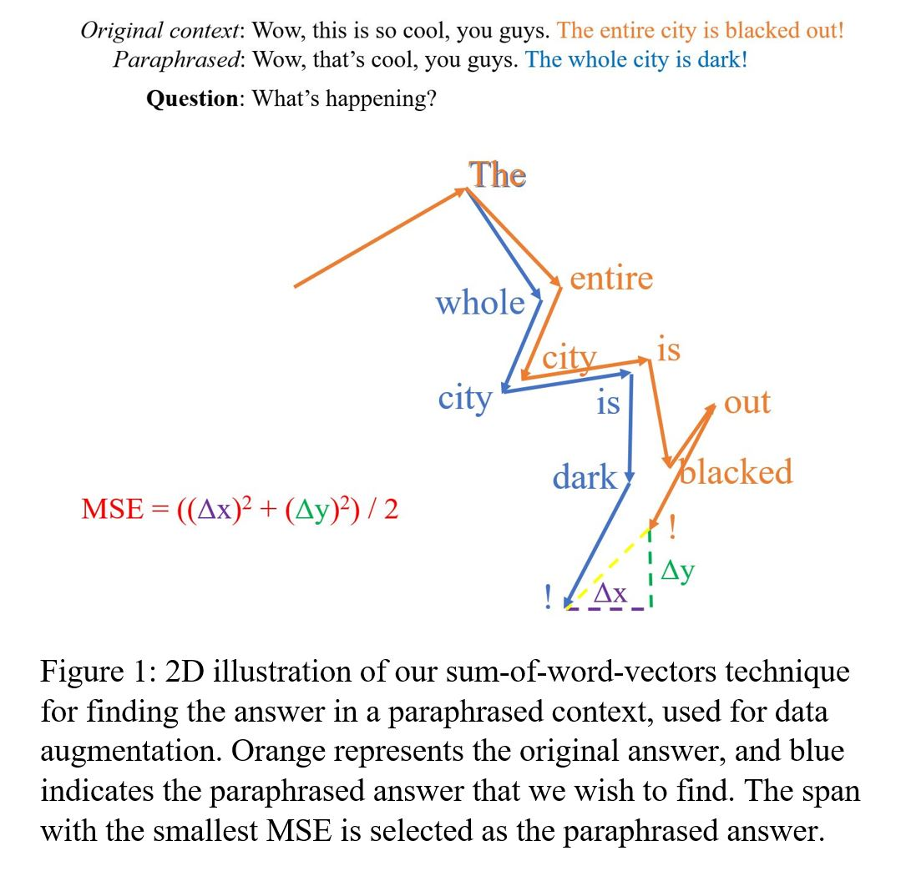

PyTorch, nltk, 🤗 transformerRapid progress on Question Answering (QA) has been made in recent years. However, widely used benchmarks on QA, such as SQuAD, Natural Questions and NewsQA, mostly consist of passages from Wikipedia or other online sources, yet this is only one category of human languages.
One other crucial aspect of languages comes in the form of everyday conversations, and understanding them is equally important for better machine comprehension on human languages.
In this paper, we explore FriendsQA, a question answering dataset that contains 1,222 dialogues and 10,610 open-domain questions based on transcripts from the TV show Friends. It is the first dataset that challenges span-based QA on multiparty dialogue with daily topics.
We aim to improve model robustness and performance on FriendsQA dataset via data augmentation and ensembling. We generated 4 new training datasets of well-paraphrased contexts and questions through back-translation.
We proposed a novel method to find answers in paraphrased text through the use of the sum of word embeddings. When looking for answers in the back-translated context, we compared phrases by taking the sum of word embeddings before the calculation of the normalized mean squared error. This method effectively compensates for the disadvantages of sentences that are paraphrased well but have long length compared to the original ones.
We trained BERT on the augmented datasets, and then ensembled BERT-large models, pushing state-of-the-art F1 / EM scores on FriendsQA from 69.6 / 53.5 to 72.08 / 54.62.
